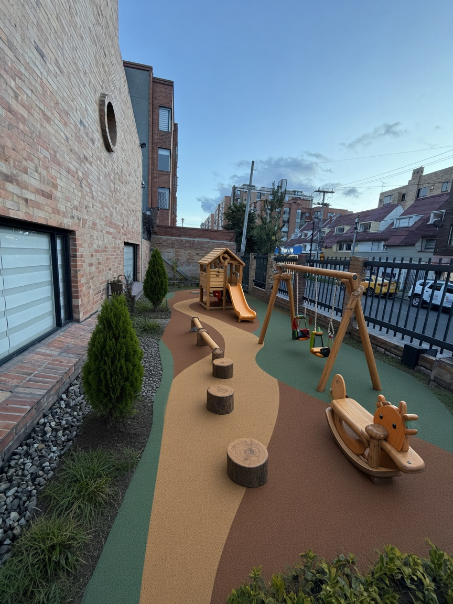
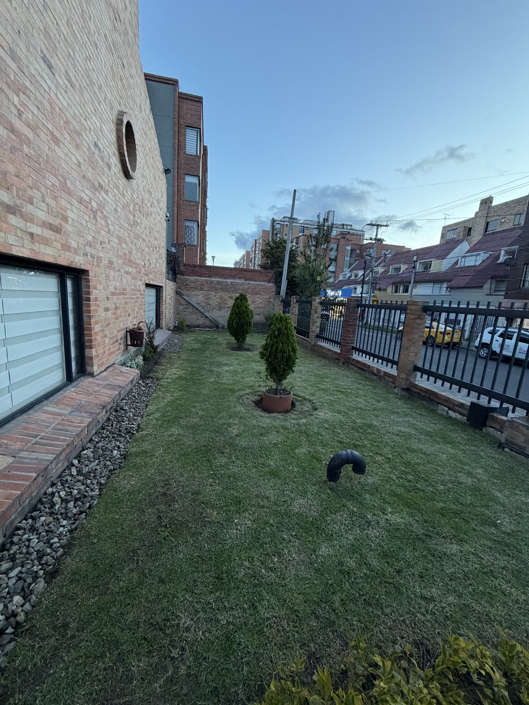

Parque infantil
Propuesta lineal para la franja estrecha entre el edificio de ladrillo y la reja: piso de seguridad, madera natural y equipo a escala del sitio.

El mismo pasillo verde, transformado en un parque compacto con superficie de caucho y juegos en línea.

Disposición en fila para un terreno de unos 4–5 m de ancho y 12–15 m de largo.